راهنمای گامبهگام برای مشتریان، اپراتورها و تیم پشتیبانی؛ شامل وبسایت عمومی، حساب کاربری، فرایند کامل خرید و پرسشهای پرتکرار.
نسخهٔ ۱٫۰ — مرداد ۱۴۰۵سند رسمی داخلی
وبسایت عمومی
این فصل تمام صفحاتی را که هر بازدیدکننده — پیش از ورود به حساب کاربری — میبیند شرح میدهد. هدف این است که اپراتور یا کارشناس پشتیبانی بتواند بدون آموزش شفاهی، عملکرد هر بخش، دکمه و فیلتر را توضیح دهد و مشتری را هدایت کند.
صفحهٔ نخست (خانه)
این صفحه چرا وجود دارد؟ صفحهٔ نخست، ویترین فروشگاه است؛ نخستین نقطهٔ تماس مشتری با ویتورایز که ارزشهای کلیدی (تحویل آنی، پرداخت امن، ضمانت اصالت) و بهترین محصولات را در یک نگاه نشان میدهد و مسیر رسیدن به خرید را کوتاه میکند.

صفحهٔ نخست فروشگاه ویتورایز با نوار بالا، بخش قهرمان، محصولات ویژه و جدید.
بخشهای این صفحه از بالا به پایین:
نوار بالا (Header): در سمت راست لوگوی «ویتورایز» و منوی اصلی (خانه، فروشگاه، دستهبندیها، وبلاگ، سوالات متداول) قرار دارد. در مرکز، کادر جستجو و در سمت چپ کلید تغییر روشنایی (تم روشن/تیره)، سبد خرید و دکمهٔ «ورود | ثبتنام» دیده میشود. پس از ورود، این دکمه جای خود را به نشان حساب کاربری و شمارندهٔ سبد خرید و علاقهمندیها میدهد.
بخش قهرمان (Hero): بنر بزرگ معرفی با شعار فروشگاه و دو کلید «ورود به فروشگاه» و «دستهبندیها» برای شروع سریع خرید. سه کارت کوچک کنار آن (تحویل آنی، پشتیبانی ۲۴/۷، ضمانت اصالت) مزیتهای اصلی را برجسته میکند.
دستهبندیها: کارتهای دسته (مانند «گیفت کارت») که با کلیک روی هرکدام، مشتری به فهرست محصولات همان دسته میرود.
محصولات ویژه: محصولاتی که مدیر آنها را «ویژه» علامت زده است؛ معمولاً پرفروشها یا دارای تخفیف. هر کارت شامل تصویر، عنوان، برچسب نوع تحویل (آنی)، قیمت و در صورت وجود، قیمت با تخفیف است.
جدیدترین و محبوبترین محصولات: دو ردیف مجزا که بهترتیب تازهترین کالاهای افزودهشده و پرطرفدارترینها را نشان میدهد.
چرا ویتورایز؟ بخش اعتمادساز با توضیح مزایا.
برندهای محبوب و خبرنامه: نوار برندها و فرم عضویت در خبرنامه در انتهای صفحه.
فوتر: لینکهای دسترسی سریع، حساب کاربری، پشتیبانی و اطلاعات تماس.
سناریوی کاربردی مشتری تازهوارد میخواهد «گیفت کارت استیم» بخرد. از بخش قهرمان روی «ورود به فروشگاه» میزند، یا مستقیماً عنوان محصول را در کادر جستجو تایپ میکند، یا روی کارت محصول در بخش «محصولات ویژه» کلیک میکند. هر سه مسیر او را به صفحهٔ جزئیات محصول میرساند.
راهنمایی کارتهایی که برچسب قیمتِ خطخورده دارند، دارای تخفیف فعالاند؛ برای معرفی پیشنهادهای ویژه به مشتری از همین کارتها استفاده کنید.
فروشگاه و فهرست محصولات
این صفحه چرا وجود دارد؟ صفحهٔ «فروشگاه» فهرست کامل کالاهای قابل خرید را با ابزارهای فیلتر، مرتبسازی و صفحهبندی نمایش میدهد تا مشتری بتواند از میان همهٔ محصولات، مورد دلخواه خود را سریع پیدا کند.
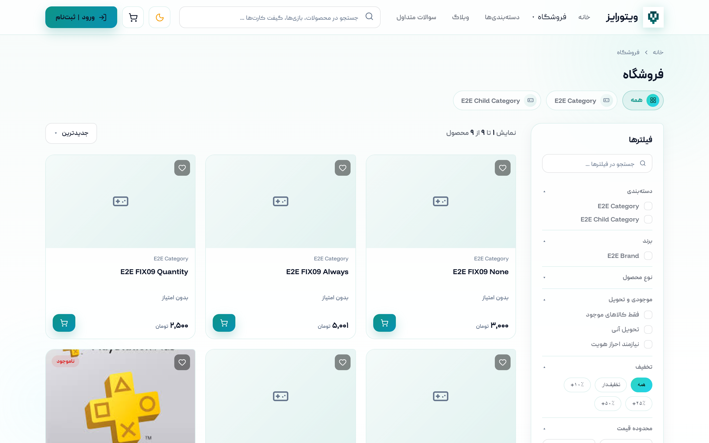
صفحهٔ فروشگاه: شمارش نتایج، شبکهٔ محصولات، ستون فیلتر و صفحهبندی.
بخشهای صفحه:
عنوان و مسیر راهنما (Breadcrumb): بالای صفحه مسیر «خانه › فروشگاه» نمایش داده میشود.
نوار ابزار بالای فهرست: کلید تغییر نمایش (همه/دستهها)، شمارندهٔ «نمایش ۱ تا ۸ از ۸ محصول» و منوی مرتبسازی «جدیدترین».
شبکهٔ محصولات: هر کارت شامل تصویر، عنوان، برچسب دستهٔ کالا، وضعیت امتیاز/نظر، برچسب نوع تحویل («آنی»)، قیمت (و قیمت با تخفیف)، دکمهٔ افزودن سریع به سبد و آیکن قلب برای افزودن به علاقهمندیهاست.
ستون فیلترها (سمت چپ): جزئیات آن در بخش بعد توضیح داده شده است.
چه زمانی استفاده میشود؟ وقتی مشتری هدف مشخصی ندارد و میخواهد میان همهٔ گزینهها بگردد، یا میخواهد نتایج را بر اساس قیمت/تخفیف/موجودی محدود کند.
فیلترها، مرتبسازی و صفحهبندی
ستون «فیلترها» ابزار اصلی محدودسازی نتایج است. همهٔ فیلترها روی همان فهرستی که مشتری میبیند اعمال میشوند و شمارندهٔ نتایج، ترتیب و صفحهبندی همگی با هم هماهنگ بهروزرسانی میشوند.
جستجوی درون فیلترها: کادر بالای ستون برای یافتن سریع یک فیلتر.
دستهبندی و برند: محدودسازی نتایج به یک دسته یا یک برند مشخص (مثلاً فقط «Steam»).
نوع محصول: مانند گیفت کارت، اکانت بازی، اشتراک.
موجودی و تحویل: گزینههای «فقط کالاهای موجود»، «تحویل آنی» و «نیازمند احراز هویت».
تخفیف: کلیدهای «همه / تخفیفدار / بیش از ۱۰٪ / بیش از ۲۵٪ / بیش از ۵۰٪».
محدودهٔ قیمت: دو کادر «از» و «تا» بر حسب تومان.
مرتبسازی: منوی «جدیدترین» با گزینههایی چون ارزانترین، گرانترین و پرفروشترین.
صفحهبندی: در پایین فهرست، شمارهصفحهها و کلیدهای قبلی/بعدی.
هشدار رایج اگر مشتری بگوید «محصولی پیدا نمیکنم»، اغلب یک فیلتر فعال مانده است. ابتدا فیلترها را پاک کنید تا فهرست کامل بازگردد.
راهنمایی شمارندهٔ «نمایش X تا Y از Z» همیشه با فیلترهای فعال هماهنگ است؛ برای اطمینان از درستی نتیجه، این عدد را با تعداد کارتهای نمایشدادهشده مقایسه کنید.
دستهبندیها و برندها
صفحهٔ «دستهبندیها» همهٔ دستههای فعال فروشگاه را بهصورت کارت نشان میدهد و صفحهٔ هر دسته یا برند، فهرست محصولات همان گروه را با همان ابزارهای فیلتر و مرتبسازی ارائه میکند.
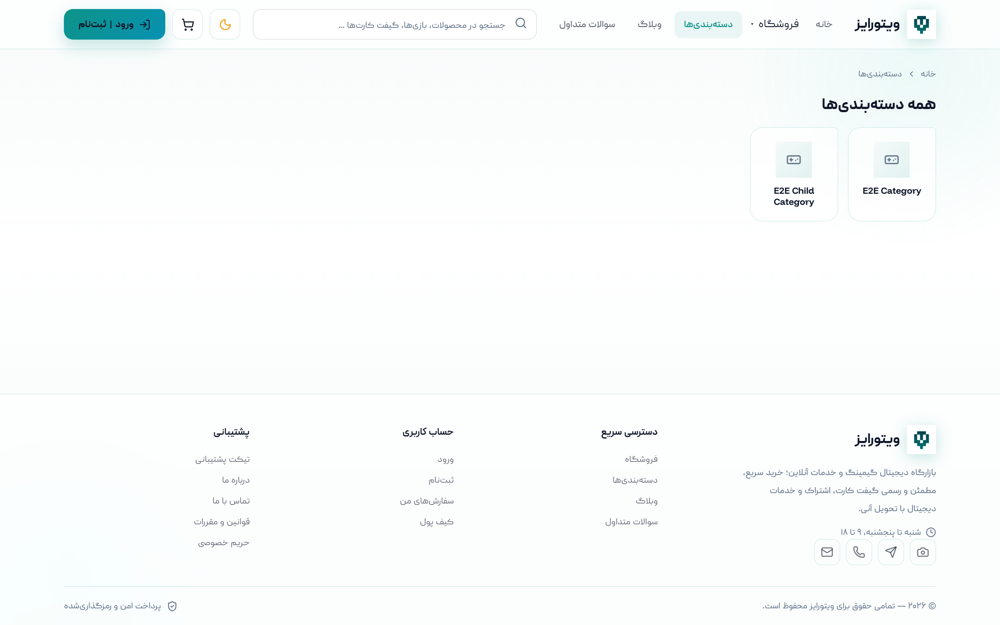
صفحهٔ فهرست دستهبندیها.
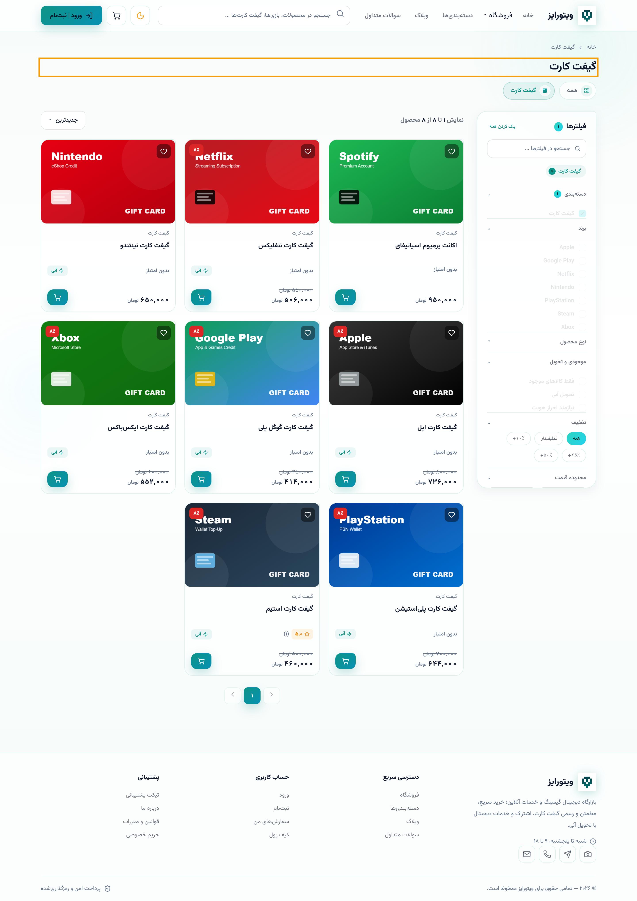
صفحهٔ یک دستهٔ خاص (گیفت کارت) با محصولات همان دسته.
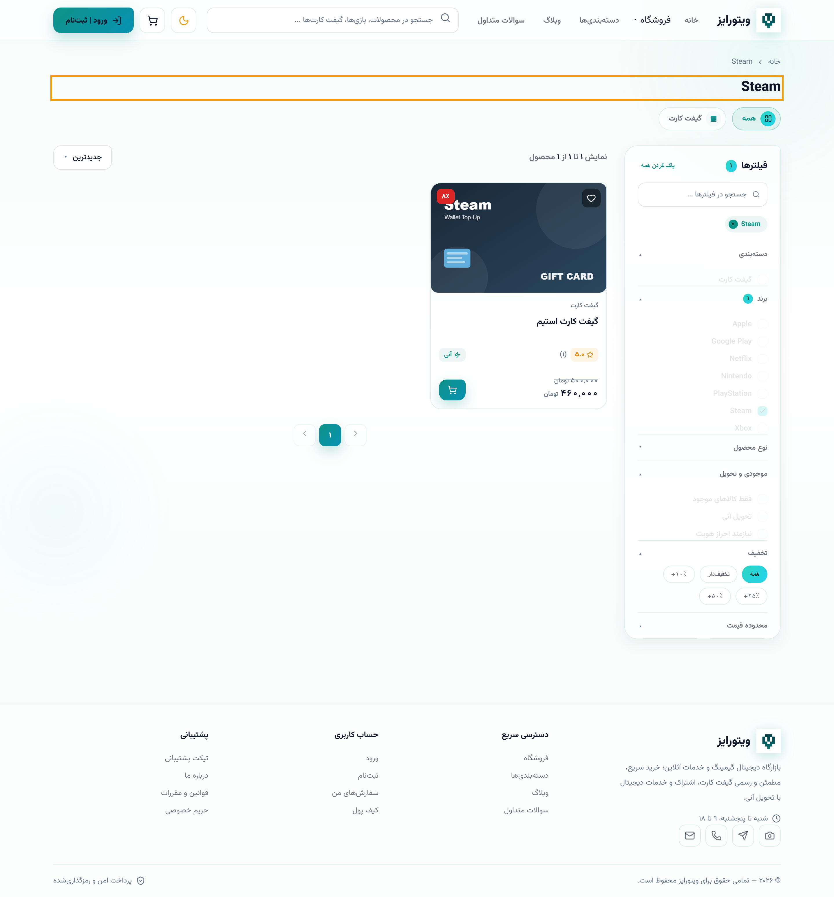
صفحهٔ یک برند (مثلاً Steam) با محصولات مرتبط.
سناریوی کاربردی مشتری فقط به محصولات «PlayStation» علاقه دارد؛ از منوی برندها یا از فیلتر برند در فروشگاه، برند موردنظر را انتخاب میکند و فهرست به همان برند محدود میشود.
جستجو
کادر جستجوی نوار بالا در همهٔ صفحات در دسترس است. با تایپ نام محصول، بازی یا سرویس و زدن Enter، صفحهٔ نتایج جستجو باز میشود که همان قالب فهرست محصولات را دارد و میتوان نتایج را باز هم فیلتر و مرتب کرد.
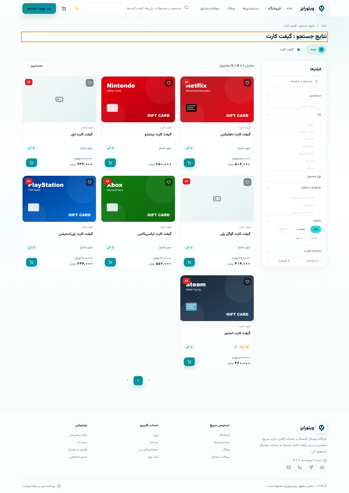
صفحهٔ نتایج جستجو برای عبارت «گیفت کارت».
راهنمایی اگر نتیجهای یافت نشد، از مشتری بخواهید املای عبارت را سادهتر کند (مثلاً فقط «استیم») یا از دستهبندیها استفاده کند.
جزئیات محصول
این صفحه چرا وجود دارد؟ صفحهٔ جزئیات محصول، کاملترین اطلاعات یک کالا را گرد هم میآورد تا مشتری با اطمینان تصمیم بگیرد و خرید را آغاز کند. این صفحه قلب تبدیل بازدید به خرید است.
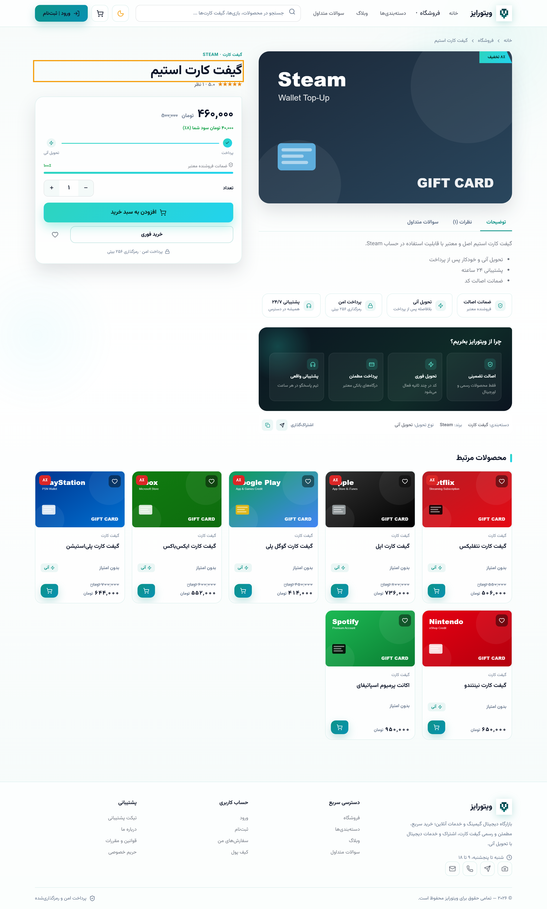
صفحهٔ جزئیات «گیفت کارت استیم» شامل قیمت، انتخاب تعداد، افزودن به سبد و خرید فوری.
بخشهای صفحه:
تصویر/گالری محصول: سمت چپ، تصویر اصلی کالا.
عنوان، دسته و امتیاز: نام کالا، دستهٔ آن و میانگین امتیاز بههمراه تعداد نظرها.
کارت قیمت و خرید: قیمت نهایی، مبلغ صرفهجویی در صورت تخفیف، نوار وضعیت (تحویل / ضمانت فروشنده)، انتخابگر تعداد، دکمهٔ «افزودن به سبد خرید»، دکمهٔ «خرید فوری» و آیکن افزودن به علاقهمندیها.
زبانههای اطلاعات: «توضیحات»، «سوالات متداول محصول» و «نظرات (n)».
چرا از ویتورایز بخریم؟ کارتهای اعتمادساز.
محصولات مرتبط: پیشنهاد کالاهای مشابه در پایین صفحه.
سناریوی کاربردی مشتری «گیفت کارت اپل» را باز میکند، تعداد را روی ۱ میگذارد و «افزودن به سبد خرید» را میزند؛ سپس میتواند خرید محصولات دیگر را ادامه دهد یا مستقیم به سبد برود.
هشدار برخی محصولات ممکن است «نیازمند احراز هویت» باشند؛ در این حالت تا تکمیل احراز هویت و تأیید موبایل، امکان نهاییکردن خرید آن کالا وجود ندارد (به فصل ۲ مراجعه کنید).
سوالات متداول
صفحهٔ «سوالات متداول» پاسخ پرسشهای پرتکرار خرید (نحوهٔ خرید، زمان دریافت کد، پرداخت ناموفق، کد تخفیف، کیف پول و احراز هویت) را در یک نگاه ارائه میدهد و بار مراجعه به پشتیبانی را کاهش میدهد.
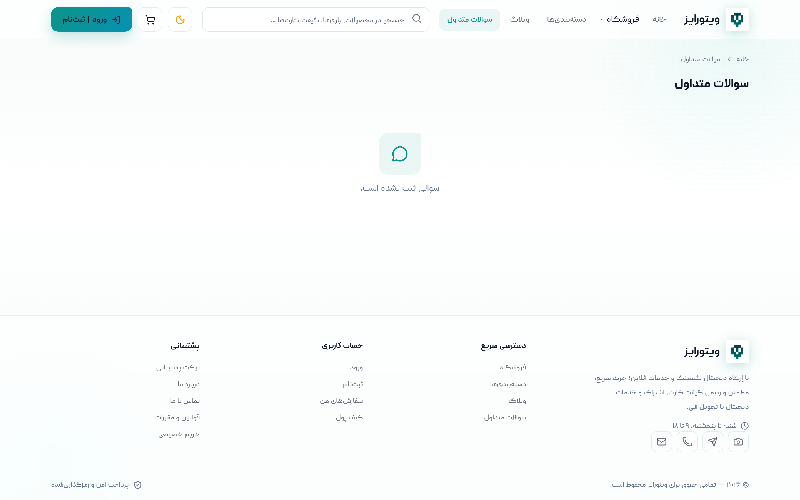
صفحهٔ سوالات متداول فروشگاه.
وبلاگ
وبلاگ، مقالات آموزشی و راهنما (مثلاً «راهنمای فعالسازی گیفت کارت استیم» یا «نکات پرداخت امن») را منتشر میکند. فهرست مقالات و صفحهٔ تکمقاله در ادامه دیده میشود.
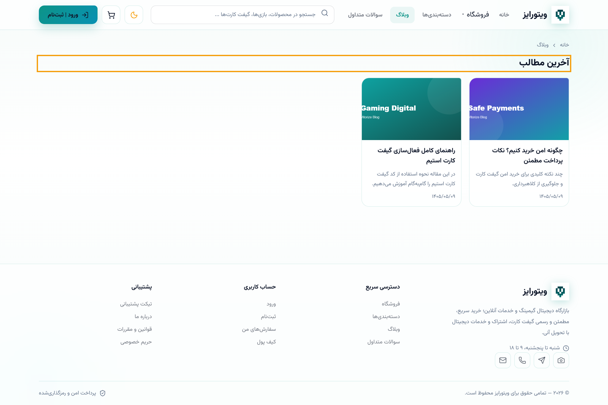
فهرست مقالات وبلاگ.
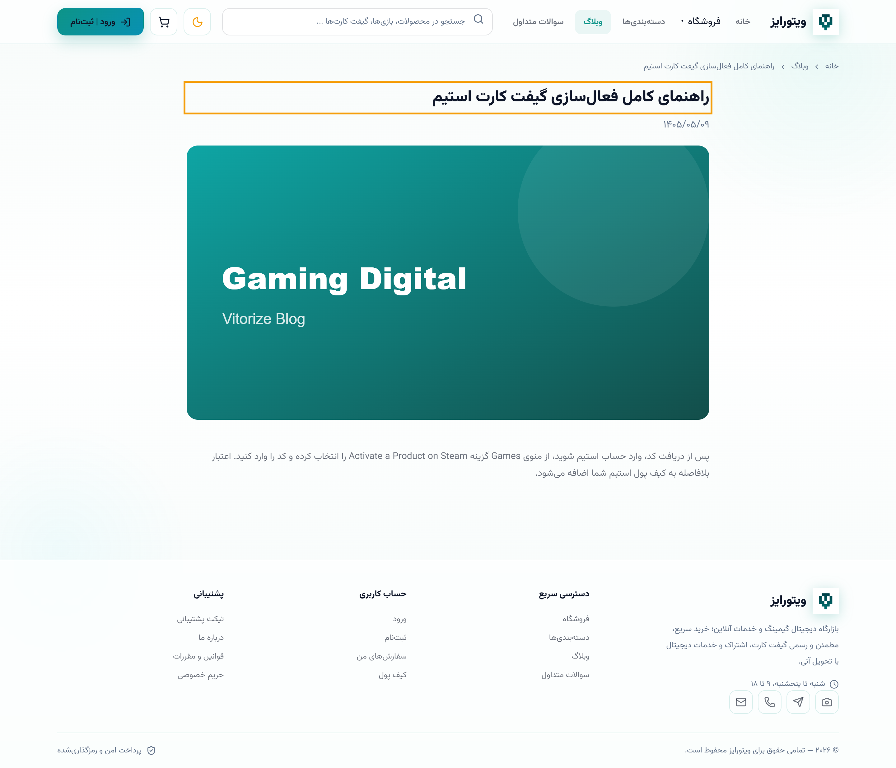
صفحهٔ یک مقالهٔ کامل وبلاگ.
صفحات اطلاعرسانی
صفحات محتوایی مانند «درباره ما»، «تماس با ما»، «قوانین و مقررات» و «حریم خصوصی» از طریق فوتر در دسترساند و اطلاعات رسمی فروشگاه را ارائه میکنند.
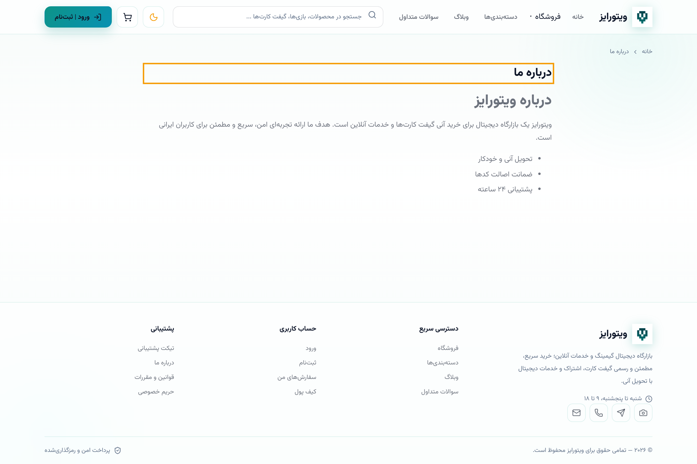
صفحهٔ «درباره ما».
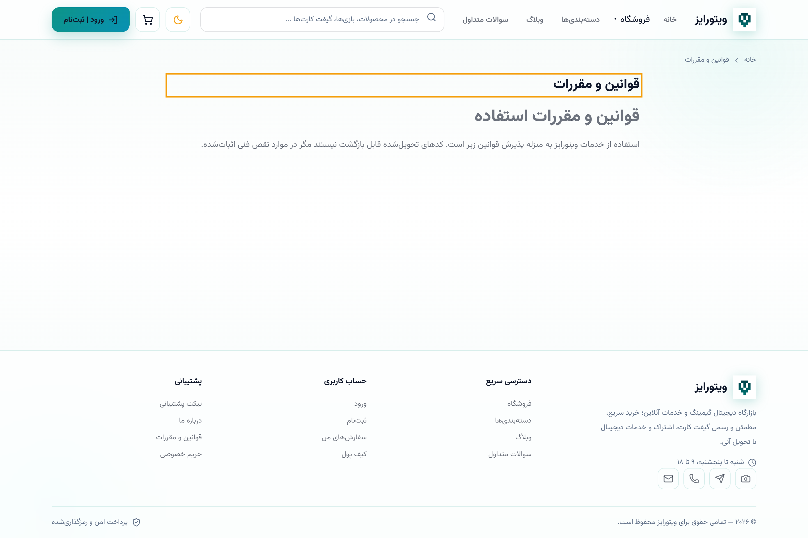
صفحهٔ «قوانین و مقررات».
ورود، ثبتنام و بازیابی رمز
برای خرید و دسترسی به حساب، مشتری باید وارد شود. صفحهٔ «ورود» دو روش دارد: ورود با رمز عبور و ورود با کد یکبارمصرف پیامکی. صفحهٔ «ثبتنام» برای ساخت حساب جدید و صفحهٔ «فراموشی رمز عبور» برای بازیابی رمز است.
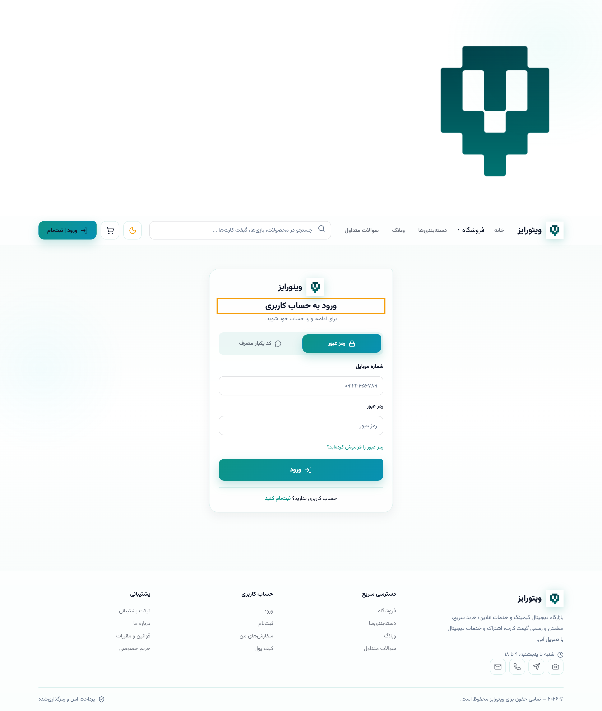
صفحهٔ ورود مشتری (رمز عبور / کد یکبارمصرف).
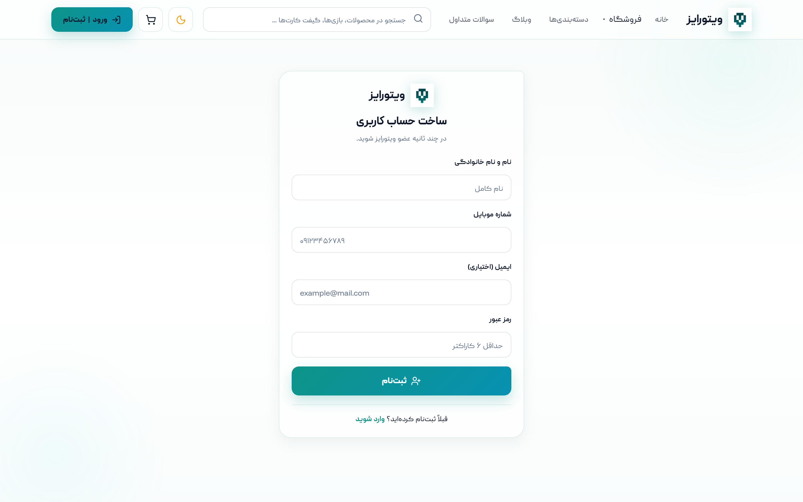
صفحهٔ ثبتنام مشتری.
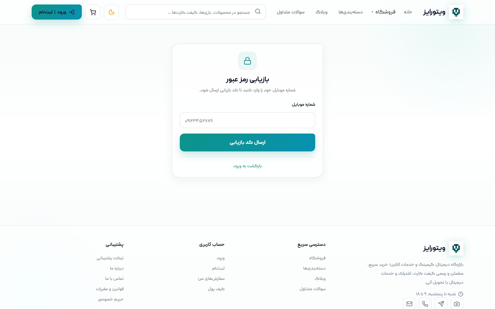
صفحهٔ بازیابی رمز عبور.
راهنمایی برای ورود با کد یکبارمصرف، شماره موبایل باید معتبر و در دسترس باشد؛ کد از طریق پیامک ارسال میشود.
اشتباه رایج ورود مدیران از صفحهٔ اختصاصی «ورود مدیریت» انجام میشود و با ورود مشتری متفاوت است؛ مشتری نباید از آدرس مدیریت استفاده کند.
حساب کاربری مشتری
پس از ورود، مشتری به ناحیهٔ کاربری دسترسی پیدا میکند. این ناحیه یک نوار کناری ثابت دارد که همهٔ بخشها (داشبورد، سفارشها، کدهای من، علاقهمندیها، کیف پول، احراز هویت، تیکتها، اعلانها، نظرات، پروفایل و خروج) را در دسترس میگذارد.
داشبورد حساب
این صفحه چرا وجود دارد؟ داشبورد، خلاصهای از وضعیت حساب مشتری (سفارشهای اخیر، کدهای تحویلشده، موجودی کیف پول و میانبرهای پرکاربرد) را در یک نگاه ارائه میدهد تا مشتری سریع به بخش موردنیاز برسد.
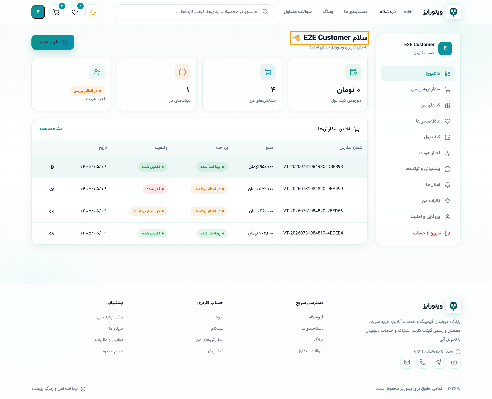
داشبورد حساب کاربری مشتری با خلاصهٔ وضعیت و نوار کناری.
سفارشهای من
این صفحه چرا وجود دارد؟ مشتری برای پیگیری وضعیت خریدها، مشاهدهٔ مبلغ، تاریخ و دسترسی به جزئیات و کدهای هر سفارش به این صفحه میآید.
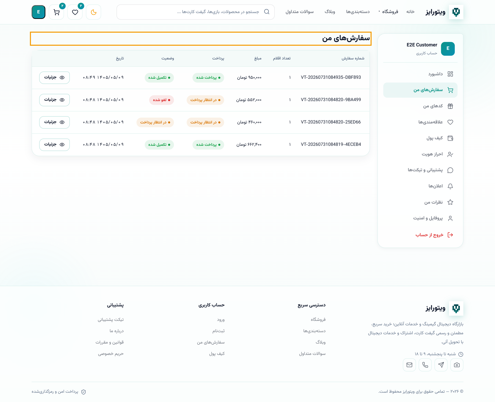
فهرست سفارشهای مشتری با شمارهٔ سفارش، مبلغ، وضعیت پرداخت و وضعیت سفارش.
وضعیتهای سفارش که مشتری میبیند: «در انتظار پرداخت»، «در حال پردازش»، «تکمیلشده»، «لغوشده» و در صورت وجود «بازپرداختشده». با کلیک روی هر سفارش، صفحهٔ جزئیات باز میشود.
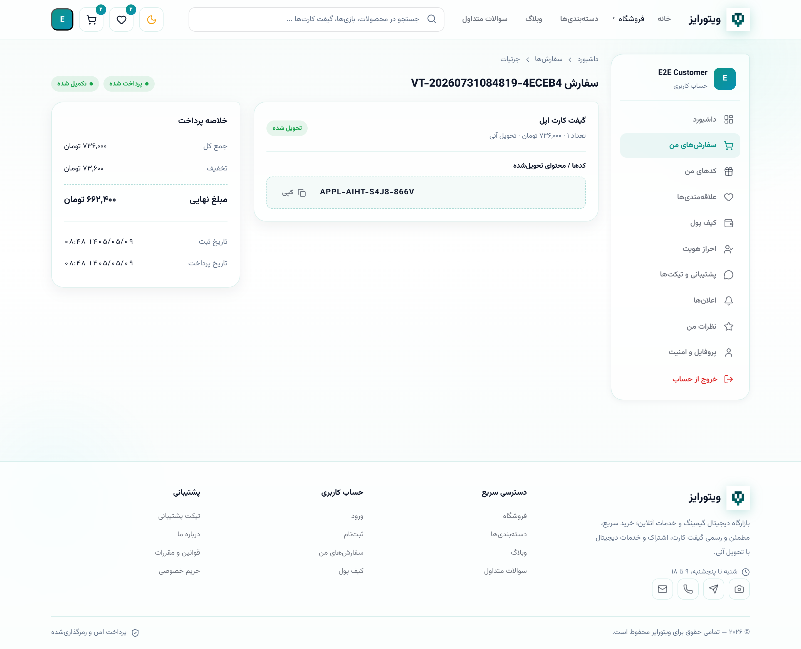
جزئیات یک سفارش تکمیلشده بههمراه اقلام و کد تحویلشده.
سناریوی کاربردی مشتری میخواهد بداند کد خریدش کجاست؛ وارد «سفارشهای من» میشود، سفارش تکمیلشده را باز میکند و کد را در بخش اقلام سفارش میبیند؛ همان کد در «کتابخانهٔ کدهای من» نیز در دسترس است.
اشتباه رایج اگر سفارشی در وضعیت «در انتظار پرداخت» مانده، یعنی پرداخت نهایی نشده است؛ مشتری باید پرداخت را کامل کند یا سفارش تازه ثبت کند.
کتابخانهٔ کدهای من
این صفحه چرا وجود دارد؟ این صفحه همهٔ کدها و محتوای تحویلشده به مشتری را — از همهٔ سفارشها — یکجا گرد میآورد تا دسترسی به کدهای خریداریشده ساده و امن باشد.
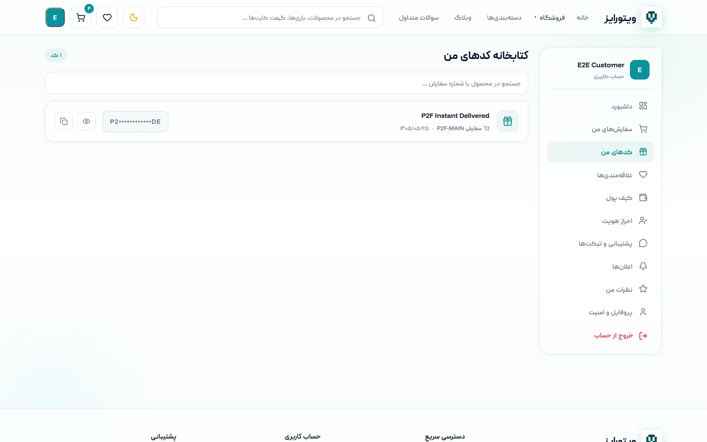
کتابخانهٔ کدهای مشتری؛ هر ردیف شامل محصول، شمارهٔ سفارش، کد پوشیده و دکمههای نمایش/کپی است.
نحوهٔ کار: کد بهصورت پیشفرض پوشیده (ماسکشده) نمایش داده میشود. دکمهٔ «چشم» کد را آشکار میکند و دکمهٔ «کپی» آن را در حافظه قرار میدهد. کادر جستجوی بالای صفحه امکان یافتن کد بر اساس نام محصول یا شمارهٔ سفارش را میدهد.
راهنمایی فقط کدهای سفارشهای پرداختشده و تحویلشده اینجا نمایش داده میشوند؛ کدهای سفارشهای در انتظار پرداخت هنوز ظاهر نمیشوند.
هشدار امنیتی کد تحویلشده فقط برای صاحب حساب قابل مشاهده است. از مشتری بخواهید کد را در جای امن نگه دارد؛ پس از آشکارسازی و استفاده، کد قابل بازگشت نیست.
کیف پول
کیف پول امکان نگهداری موجودی و پرداخت سریع سفارشهای تومانی را میدهد. مشتری میتواند کیف پول را شارژ کند و تاریخچهٔ تراکنشها (واریز، برداشت بابت خرید، بازپرداخت) را ببیند.
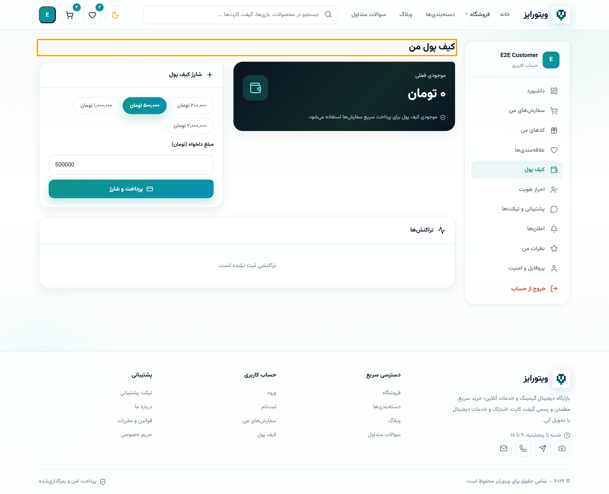
صفحهٔ کیف پول مشتری با موجودی و تاریخچهٔ تراکنشها.
سناریوی کاربردی مشتری کیف پول را ۵٬۰۰۰٬۰۰۰ تومان شارژ میکند؛ سپس هنگام تسویه، روش «پرداخت با کیف پول» را برمیگزیند و سفارش بیدرنگ و بدون مراجعه به درگاه پرداخت میشود.
علاقهمندیها
فهرست علاقهمندیها کالاهایی را که مشتری با آیکن قلب ذخیره کرده نگه میدارد تا بعداً بهراحتی پیدا و خریداری کند.
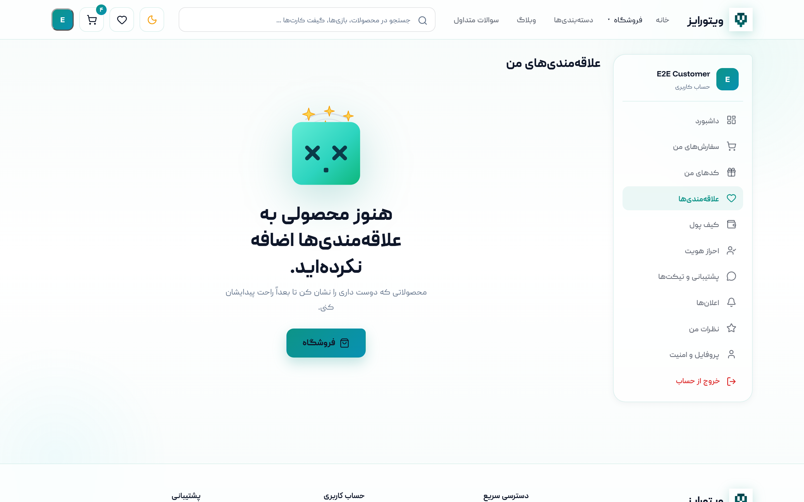
فهرست علاقهمندیهای مشتری.
اعلانها
اعلانها رویدادهای مهم حساب (ثبت سفارش، پرداخت موفق، تحویل کد، پاسخ تیکت و…) را به مشتری خبر میدهند. شمارندهٔ اعلانهای خواندهنشده در نوار بالا دیده میشود و مشتری میتواند هر اعلان را خواندهشده کند.
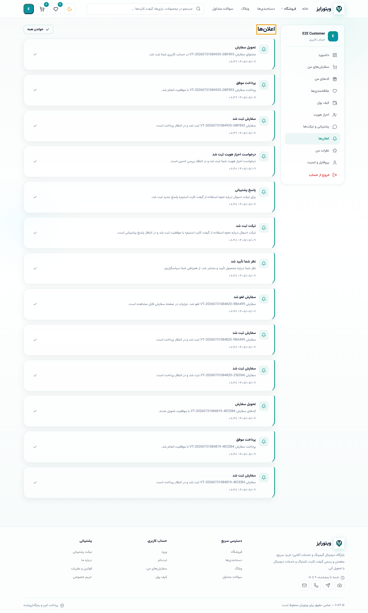
صفحهٔ اعلانهای مشتری.
پشتیبانی و تیکتها
سامانهٔ تیکت، کانال رسمی ارتباط مشتری با پشتیبانی است. مشتری میتواند تیکت جدید بسازد، پاسخها را ببیند و گفتگو را ادامه دهد.
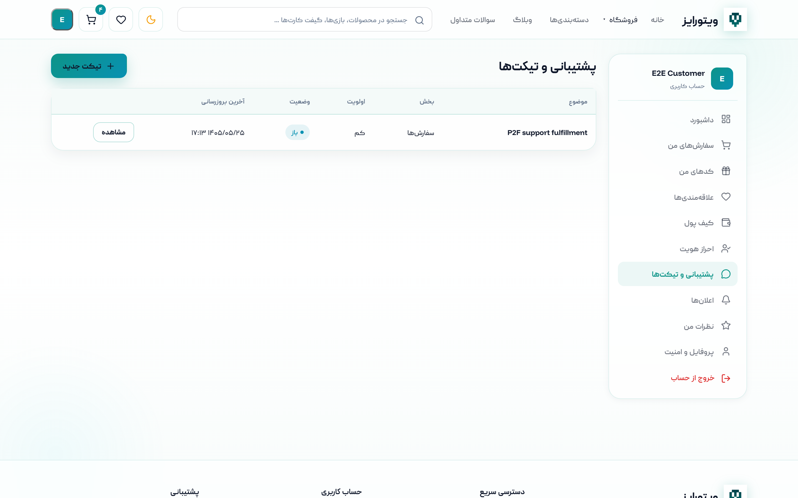
فهرست تیکتهای مشتری.
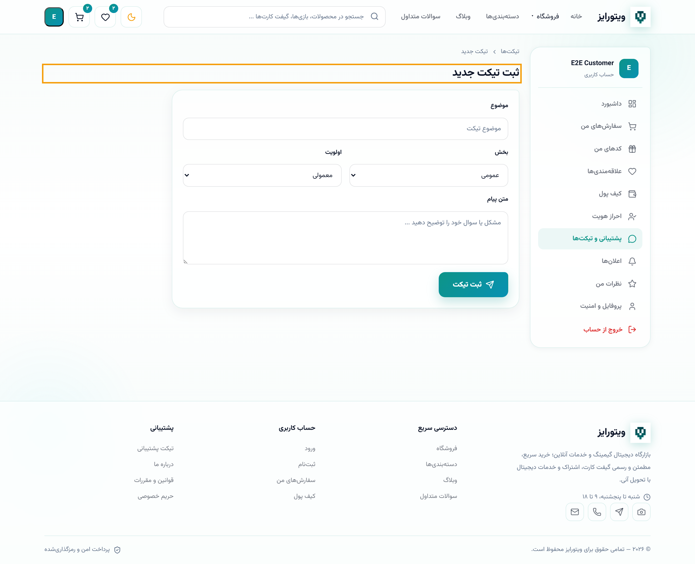
فرم ساخت تیکت جدید (موضوع، دپارتمان، اولویت و متن پیام).
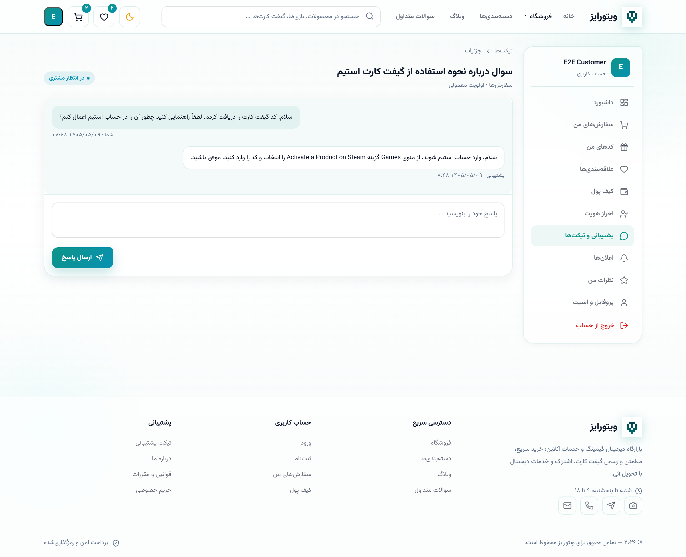
صفحهٔ گفتگوی یک تیکت بههمراه پاسخ پشتیبانی.
سناریوی کاربردی مشتری در فعالسازی کد مشکل دارد؛ از «تیکت جدید»، دپارتمان «سفارشها» را انتخاب میکند، شرح مشکل را مینویسد و پس از پاسخ کارشناس، از همان صفحه گفتگو را ادامه میدهد.
نظرات من
مشتری میتواند برای محصولاتی که خریده، نظر و امتیاز ثبت کند و وضعیت تأیید نظرهایش را در این صفحه ببیند.
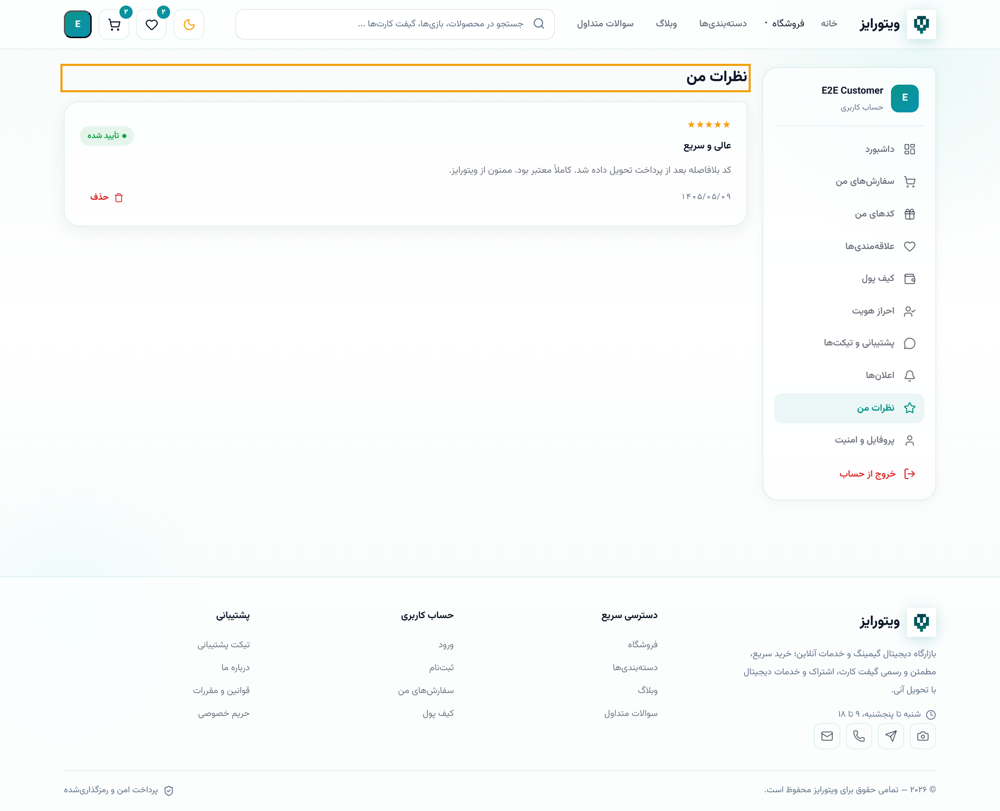
صفحهٔ نظرات ثبتشدهٔ مشتری.
نکته نظرها پس از ثبت، پیش از نمایش عمومی توسط مدیر بررسی و تأیید میشوند؛ بنابراین ممکن است بلافاصله در صفحهٔ محصول دیده نشوند.
احراز هویت
برخی محصولات برای خرید نیازمند احراز هویتاند. در این صفحه مشتری اطلاعات هویتی خود را ثبت میکند و وضعیت درخواست (در انتظار بررسی، تأییدشده، ردشده) را میبیند.
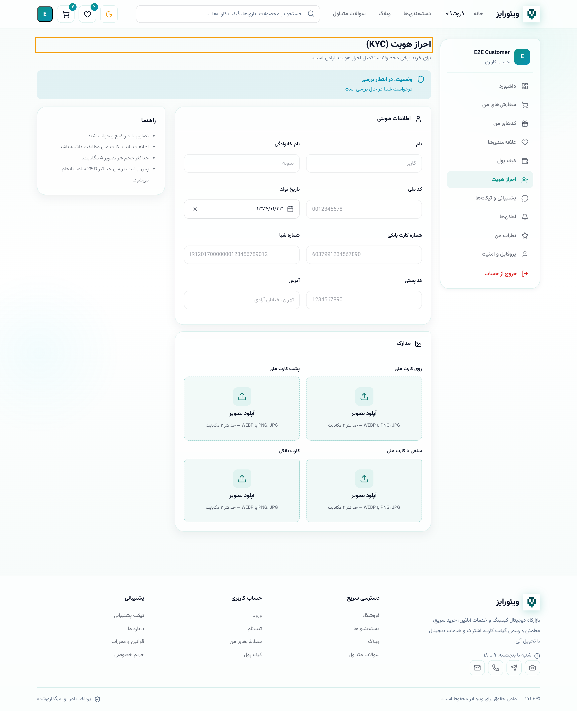
صفحهٔ احراز هویت مشتری.
سناریوی کاربردی مشتری قصد خرید کالای «نیازمند احراز هویت» را دارد؛ ابتدا فرم احراز هویت را پر و ارسال میکند و پس از تأیید مدیر، امکان تکمیل خرید آن کالا فراهم میشود.
پروفایل و امنیت
در این صفحه مشتری اطلاعات شخصی (نام، ایمیل) و تنظیمات امنیتی حساب را مدیریت میکند.
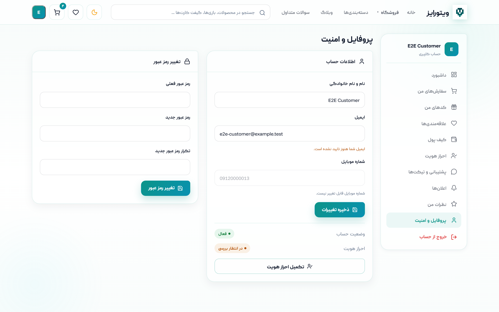
صفحهٔ پروفایل و امنیت حساب.
فرایند کامل خرید
این فصل کل مسیر خرید را گامبهگام و با تصویر هر مرحله شرح میدهد: از ورود و انتخاب محصول تا پرداخت، تحویل کد و دسترسی نهایی در کتابخانهٔ کدها. مسیر کلی چنین است: ورود ← انتخاب محصول ← افزودن به سبد ← اعمال کد تخفیف ← تسویهحساب ← پرداخت ← ثبت سفارش ← تحویل کد ← کتابخانهٔ کدها.
سبد خرید
پس از افزودن کالا، مشتری به سبد خرید میرود. اینجا اقلام، تعداد، قیمت هر قلم و جمع کل نمایش داده میشود و میتوان تعداد را تغییر داد یا قلمی را حذف کرد.
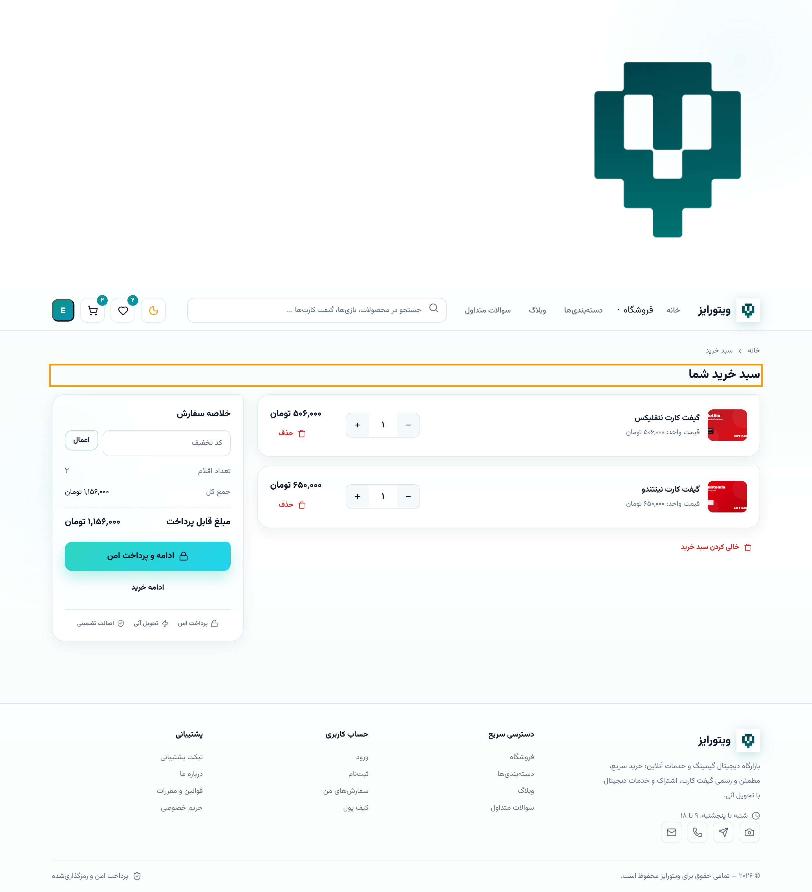
سبد خرید با اقلام انتخابشده، تعداد و جمع مبلغ.
نکته قیمتها هنگام تسویهحساب دوباره از کاتالوگ معتبر محاسبه میشوند؛ بنابراین اگر قیمت کالایی تغییر کرده باشد، مبلغ نهایی بر اساس قیمت روز اعمال میشود.
تسویهحساب و کد تخفیف
در صفحهٔ تسویهحساب، مشتری اطلاعات لازم را بررسی میکند، در صورت داشتن «کد تخفیف» آن را وارد و اعمال میکند و سپس سفارش را نهایی میکند. مبلغ نهایی پس از کسر تخفیف نمایش داده میشود.
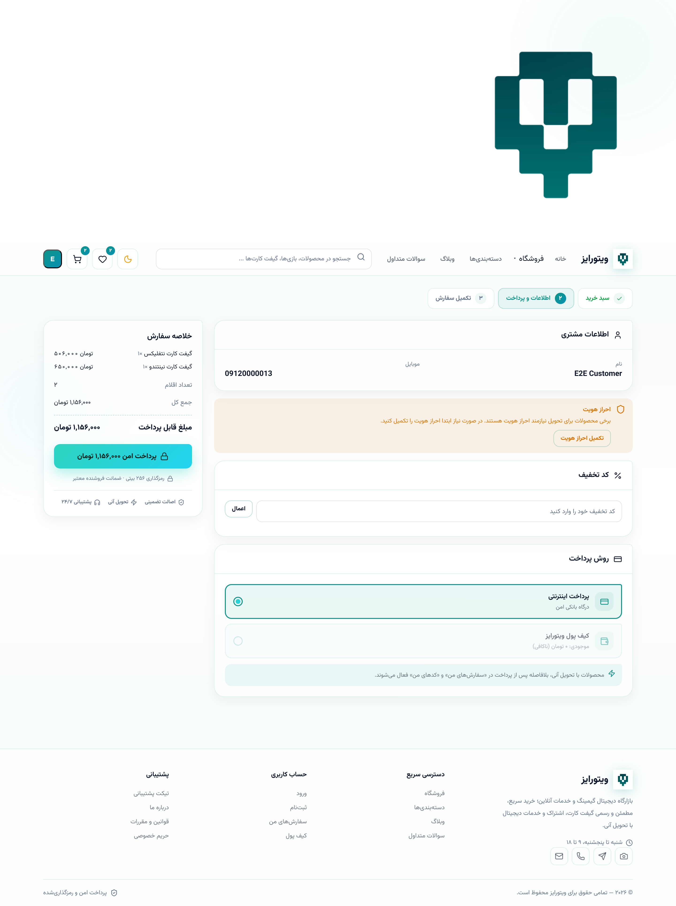
صفحهٔ تسویهحساب و محل ورود کد تخفیف.
سناریوی کاربردی مشتری کد «WELCOME10» را وارد میکند؛ اگر شرایط (حداقل مبلغ سفارش، اعتبار زمانی و سقف استفاده) برقرار باشد، ۱۰٪ تخفیف اعمال و مبلغ نهایی کم میشود.
چرا کد تخفیف رد میشود؟ رایجترین دلایل: نرسیدن به «حداقل مبلغ سفارش»، منقضیشدن بازهٔ زمانی کد، غیرفعالبودن کد یا پرشدن سقف استفاده. پیام خطا دلیل دقیق را نشان میدهد.
پرداخت و نتیجهٔ آن
پس از نهاییکردن سفارش، مشتری برای پرداخت به درگاه هدایت میشود (یا در صورت انتخاب، از کیف پول پرداخت میکند). پس از پرداخت، صفحهٔ «نتیجهٔ پرداخت» وضعیت را اعلام میکند.
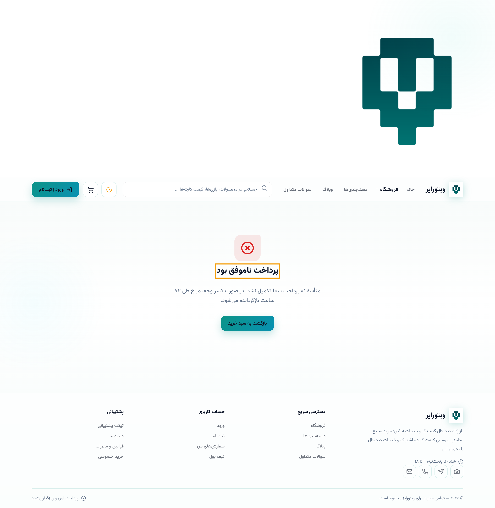
صفحهٔ نتیجهٔ پرداخت.
در پرداخت موفق، سفارش بلافاصله به وضعیت «در حال پردازش/تکمیلشده» میرود، کد رزروشده بهصورت خودکار «فروخته و تحویل» میشود و در «کتابخانهٔ کدهای من» قرار میگیرد؛ همچنین پیامک و اعلان تأیید ارسال میشود.
سناریوهای پرداخت
پرداخت موفق
سفارش تکمیل میشود، کد تحویل داده میشود و در کتابخانهٔ کدها و جزئیات سفارش قابل مشاهده است.
کد پس از پرداخت موفق، در کتابخانهٔ کدهای مشتری ظاهر میشود.
پرداخت ناموفق یا لغوشده
اگر پرداخت ناموفق باشد یا مشتری آن را لغو کند، سفارش در وضعیت «در انتظار پرداخت» میماند و موجودی کدِ رزروشده بهصورت خودکار آزاد میشود تا برای دیگران قابل خرید باشد. مشتری میتواند دوباره برای همان سفارش اقدام به پرداخت کند یا سفارش تازه ثبت کند.
راهنمایی پشتیبانی اگر مبلغ از حساب مشتری کسر شده اما سفارش هنوز «در انتظار پرداخت» است، سامانه پرداختهای معلق را بهصورت خودکار بازبینی میکند؛ در صورت تأیید تراکنش، سفارش تکمیل خواهد شد. در غیر این صورت، وجه نزد درگاه باقی نمیماند.
پرسشهای پرتکرار
این فصل پاسخ عملی پرسشهایی است که بیشتر از سوی مشتریان مطرح میشود و مرجع سریع تیم پشتیبانی است.
پرداخت کردم اما سفارش «در انتظار پرداخت» مانده است.
یعنی تأیید نهایی پرداخت هنوز دریافت نشده است. چند دقیقه صبر کنید؛ سامانه پرداختهای معلق را بازبینی میکند. اگر تراکنش نزد درگاه موفق بوده باشد، سفارش خودکار تکمیل میشود. اگر پس از مدت معقول همچنان معلق ماند، از طریق تیکت با ذکر شمارهٔ سفارش پیگیری کنید.
کد گیفت کارت را دریافت نکردم.
ابتدا وضعیت سفارش را بررسی کنید؛ کد فقط برای سفارشهای «تکمیلشده/پرداختشده» صادر میشود. کد در دو محل قابل مشاهده است: «کتابخانهٔ کدهای من» و «جزئیات سفارش». اگر سفارش پرداختشده اما کد دیده نمیشود، تیکت ثبت کنید.
کد تخفیف پذیرفته نمیشود.
معمولاً بهدلیل نرسیدن به حداقل مبلغ سفارش، منقضیشدن کد، غیرفعالبودن یا پرشدن سقف استفاده است. متن خطای نمایشدادهشده دلیل دقیق را میگوید؛ همان را به مشتری منتقل کنید.
موجودی کیف پول کم است یا پرداخت با کیف پول انجام نمیشود.
پرداخت با کیف پول فقط برای سفارشهای تومانی و در صورت کفایت موجودی ممکن است. ابتدا کیف پول را شارژ کنید یا از درگاه پرداخت استفاده کنید.
محصول را نمیتوانم بخرم و پیام «نیازمند احراز هویت» میبینم.
این کالا برای خرید به تأیید موبایل و احراز هویت کامل نیاز دارد. از بخش «احراز هویت» اطلاعات را ثبت کنید و پس از تأیید مدیر، خرید ممکن میشود.
میخواهم چند عدد از یک گیفت کارت را با هم بخرم.
پشتیبانی میشود. در صفحهٔ محصول یا در سبد خرید، «تعداد» را روی عدد دلخواه (مثلاً ۲، ۵ یا ۱۰) بگذارید و خرید را کامل کنید. برای محصولات «تحویل آنی»، پس از پرداخت موفق بهازای هر واحد یک کد مجزا دریافت میکنید؛ همهٔ کدها در «کتابخانهٔ کدهای من» نمایش داده میشوند. اگر تعداد درخواستی از موجودی فعلی بیشتر باشد، پیش از ثبت سفارش پیام روشن «موجودی کافی نیست» نمایش داده میشود و مبلغی از شما کسر نمیشود؛ در این حالت تعداد را کاهش دهید یا کمی بعد دوباره تلاش کنید.
چطور با پشتیبانی در تماس باشم؟
از ناحیهٔ کاربری، بخش «پشتیبانی و تیکتها» → «تیکت جدید»؛ دپارتمان مناسب را انتخاب و مشکل را شرح دهید. پاسخها در همان تیکت و بهصورت اعلان به شما میرسد.